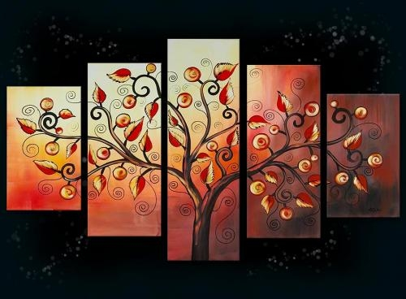
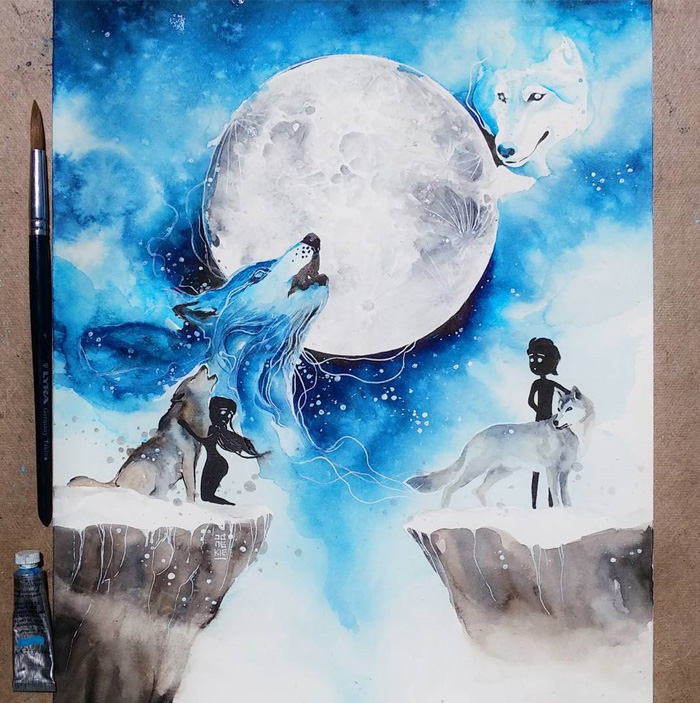
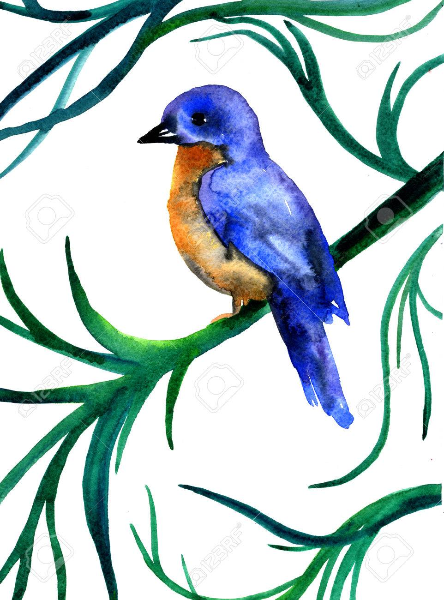
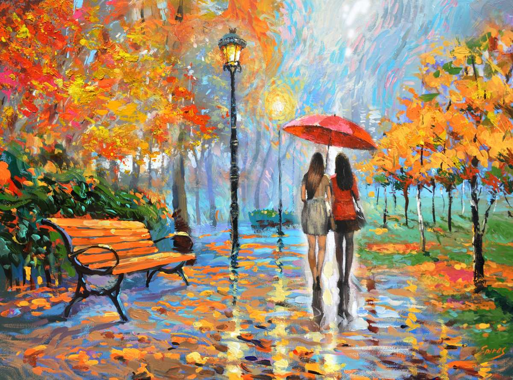
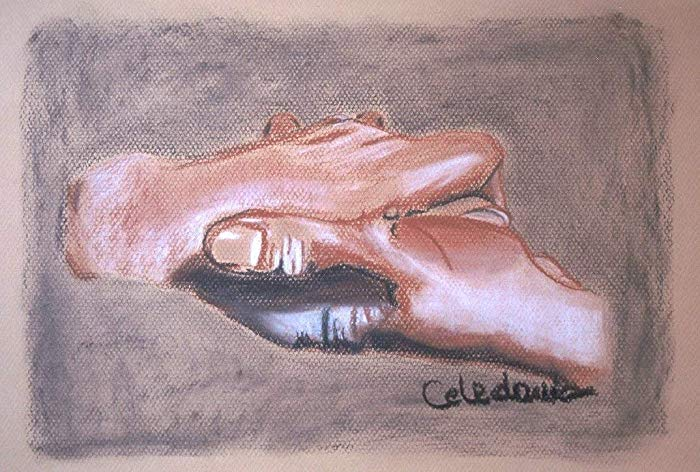
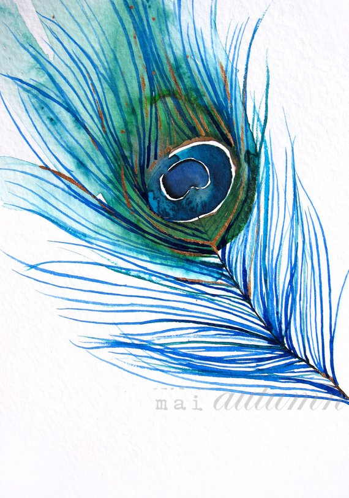

TIPOS DE TÉCNICAS DE LA PINTURA
La pintura es la creación de imágenes a través de la aplicación de pigmentos de color sobre una superficie, sea papel, tela, madera, pared, etc. Dibujar lo que uno ve, piensa o siente sobre una superficie bidimensional o también sobre algún objeto (mesa, traste de barro, caja de madera, etc.). Se suele dividir en pintura mural o de caballete. La pintura ha sido durante siglos el principal medio para documentar la realidad, reflejando en sus imágenes el devenir histórico de las distintas culturas que se han sucedido a lo largo del tiempo, así como sus costumbres y condiciones materiales.
La pintura es básicamente pigmento mezclado con un elemento fijador que da a la pintura fluidez y textura y de ahí se derivan las diferentes técnicas de pintura según la que utilicemos:
TÉCNICA ACRÍLICO
Técnica pictórica donde al colorante se le añade un aglutinante plástico, seca muy rápido, x en la mayoría de las veces, una vez que técnicas de pinturala pintura seca no puede volver a trabajarse, pues forma una “piel plástica” cohesiva que no se disuelve con agua y por lo general es de apariencia brillante. Se puede aplicar capas gruesas a diferencia del óleo para cubrir y volver a trabajar en los colores ya aplicados porque las capas secan muy rápido, generalmente lo usamos mucho en la escuela, son las famosas “pinturas vinci”.
TÉCNICA EN ACUARELA
Técnica realizada con pigmentos transparentes diluidos en agua, con aglutinantes como la goma arábiga, usando como color blanco el del propio papel, siempre les comento a mis alumnos que la acuarela su fascinante característica es que “son simples manchas de agua de color”.
AGUA O GOUACHE
Técnica similar a la acuarela, con colores más espesos y diluidos en agua, de textura gruesa y secado rápido. La pintura adquiere opacidad durante el proceso de fabricado debido a la adición de pigmento blanco a todos los colores, lo que crea el típico acabado mate y ligeramente terroso, es una técnica popularmente empleada en las carreras de diseño.
PASTEL, LAPIZ O BARRAS DE PIGMENTO
Consta de diversos colores minerales, con aglutinantes (caolín, yeso, goma arábiga, látex de higo, cola de pescado, azúcar candi, etc.), amasado con cera y jabón de Marsella y cortado en forma de barritas, también se encuentra en presentación de lápices.
Mas Técnicas de Pintura
Mostrar/Ocultar
TÉCNICA DEL ÓLEO
El aglutinante del óleo tarda más en secar, por eso la superficie de un cuadro al óleo permanece maleable por cierto tiempo. Puede uno aplicar los colores en capas gruesas o delgadas, diluidos con aguarrás y/o aceite, y mezclados con facilidad. Tal vez debas dedicar varios días a un cuadro, así darás tiempo a que se sequen las capas, la pintura gruesa seca más despacio que los “glaseados o veladuras” así que si aplicas capas de colores la técnica recomendada es trabajar “grueso sobre delgado” y adquirir poco a poco la textura deseada. Este proceso de colocar capas gradualmente es una técnica tradicional del óleo.
TÉCNICA EN CARBONCILLO
Uno de los más antiguos materiales de dibujo es sin duda el “tizón”, es decir, el carboncillo, obtenido por la combustión de delgados bastoncillos vegetales. Para su fabricación es especialmente indicada la madera de sauce, que da un negro cálido. Aunque el trazo de carboncillo es blando y pictórico, precisamente por esto resulta especialmente delicado, termina uno todo  manchado, pero podemos frotar el trazo de carbón sobre el papel, obteniendo especiales efectos de difuminado.
Por supuesto contamos con mucho más técnicas de pintura y formas para pintar, dos puntos considero son muy importantes, en primer lugar cuál de ellas les llama más la atención y con cual se sienten “más a gusto” como ya lo mencione cada técnica tiene su particularidad y encanto y el asunto es poder sacarle provecho al máximo a cada técnica considerando la composición que se va a realizar.
Espero haya sido de su agrado e interés este breviario cultural sobre las diferentes técnicas de pintura.
TÉCNICA A PLUMA Y TINTA

Formada por un mango y unas plumillas metálicas para dibujar con tinta china, ha sustituido a la antigua pluma de madera de arce o bien a la de ganso. El dibujo a pluma no admite errores o dudas; una vez realizado, no puede borrarse. Este carácter inmediato es lo que marca su peculiaridad y también su dificultad.